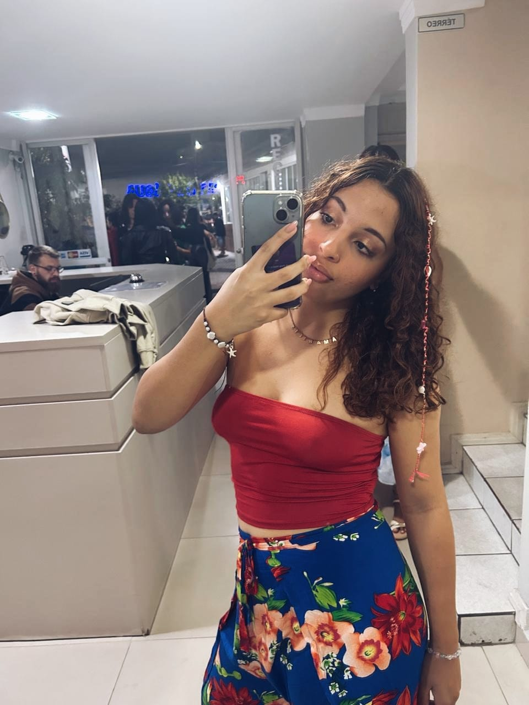
Amarílis Gonçalves Carvalho
Jornalismo Esportismo
Sou a Mel! Amante do cinema nacional, esportes e teatro.
3° Informática, vocês sempre fazem meus dias mais felizes (ou não)!
@amarilissgc °❀⋆.ೃ࿔*:･
Alessandra Pereira de Sousa
Biologia Marinha
Alessandra, 17 anos. Apaixonada por música, dança e vôlei.
Um pouco introvertida no começo, mas quando me sinto à vontade, mostro meu lado mais extrovertido.
Nem sempre me enturmo fácil, mas valorizo conexões verdadeiras.

Ana Beatriz do Valle
Profissão que ajude as pessoas
Tenho 16 anos e sou estudante de Informática.
Sou apaixonada por tecnologia e sempre busco aprender coisas novas.
Adoro ler livros que me fazem viajar por diferentes histórias.
Escutar músicas é uma das minhas formas favoritas de relaxar.

Ana Vitória Alves
Medicina Pediátrica
Tenho 17 anos, estudo no terceiro informática e sou cheia de alegria.
Meu sonho é ser pediatra e cuidar com amor das crianças.
Bianca Vitória Pinho Doerner
Medicina ou Arquitetura
⭐ 26/10/2007 escorpião, intp
"sou feita de chocomenta, anime shounen/seinen e roupas pretas"
@bianqaw.
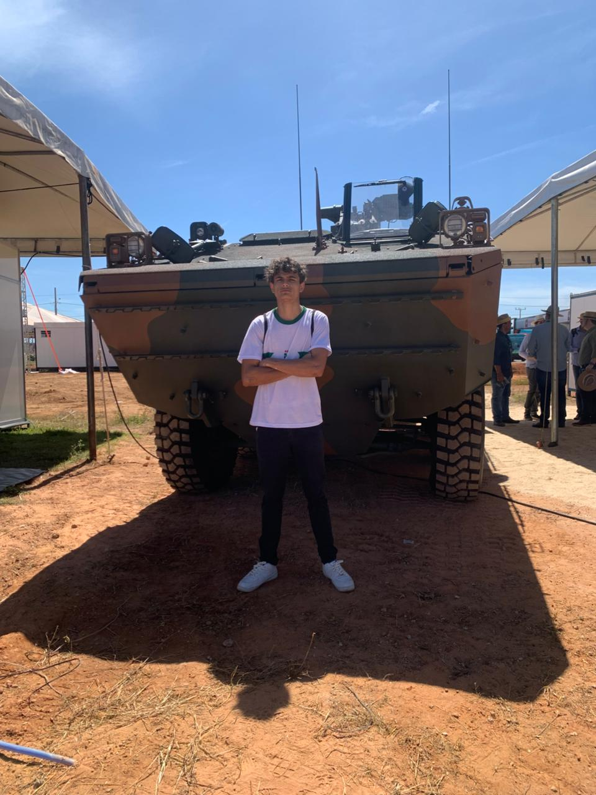
Dego da Silva Borges
Engenharia de Software
Dego da Silva, atleta de vôlei e flamenguista de carteira.
Segue no insta para me conhecer melhor @dego_borges.

Dionathan da Silva Martins
Análise de Dados
Olá, me chamo Dionathan e vou guardar boas lembranças dessa turma.
Vou sentir saudades! Segue no Instagram aí @mordick_777.
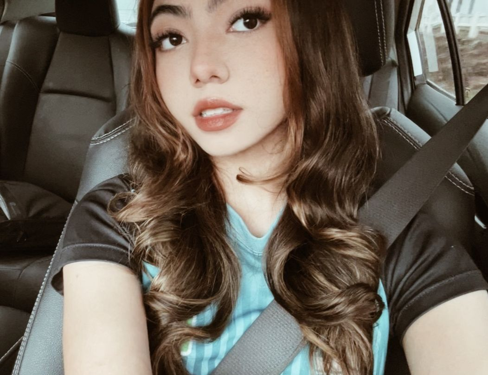
Gabriela Sales Marinho
Medicina Veterinária
Meu nome é Gabriela e vou levar essa turma para meu coração.
Me segue no insta @bagii_kk 😜

Higor Barcelo Mendes
Desenvolvimento de Aplicativos
Meu nome é Higor
3° serie técnico em informática IFTO
Tenho 17 anos
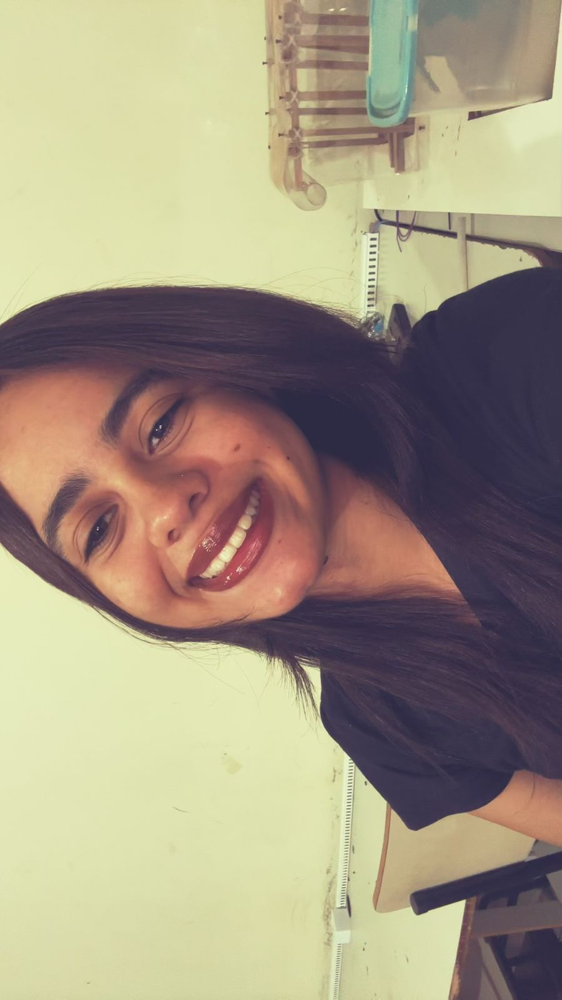
Isabela Ferreira da Silva
Engenharia Civil
Sou a Isabella, tenho 18 anos.
Terceiro info é a melhor turma que eu já estive.

Isadora Jardim Azevedo
Direito
Eu sou a Isadora Jardim!
Encontrei essa turma na metade de 2024 pra alegrar (ou não) a vida desse povo
@_isadorajardim.

João Carlos Camargo
Educação Física
Sou João Carlos, apaixonado por carros esportivos e principalmente pela minha mulher
sou alegre e sincero e também mentiroso kkkkkk, e eu sou péssimo com tudo que envolva números
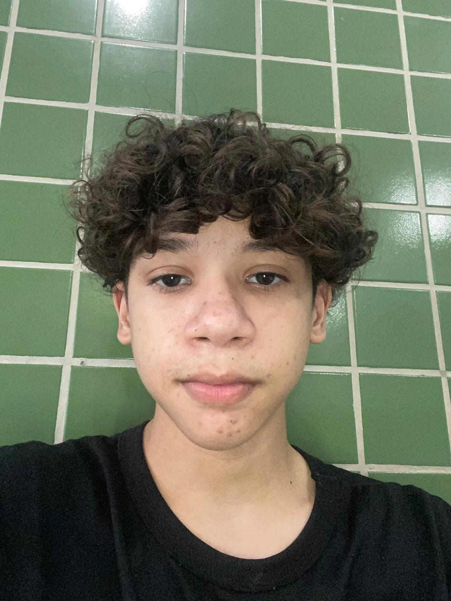
João Lucas Castro
Tudo menos trabalho braçal
Tenho 16 anos, sou preguiçoso por natureza e gramática portuguesa definitivamente não é comigo.
Prefiro tudo que seja simples, direto e sem enrolação. Se dá pra entender, já tá bom demais.

José Carlos de Mello
Design Gráfico
Me chamo José Carlos tenho 18 anos e estudo no IFTO- Paraíso
eu adoro jogar jogos e me divertir com meus amigos.

Julia Leite Omizzollo
Medicina ou Diplomacia
Olá! Sou a Julia Omizzollo, tenho 17 anos e sou estudante do IF.
Sou cristã e meus principais hobbies são ler e escrever.

Júlio César de Souza
Jogador de Futebol
Sou o Júlio César, tenho 17 anos.
Mais conhecido como CR7 do if e o cara mais lindo dessa instituição
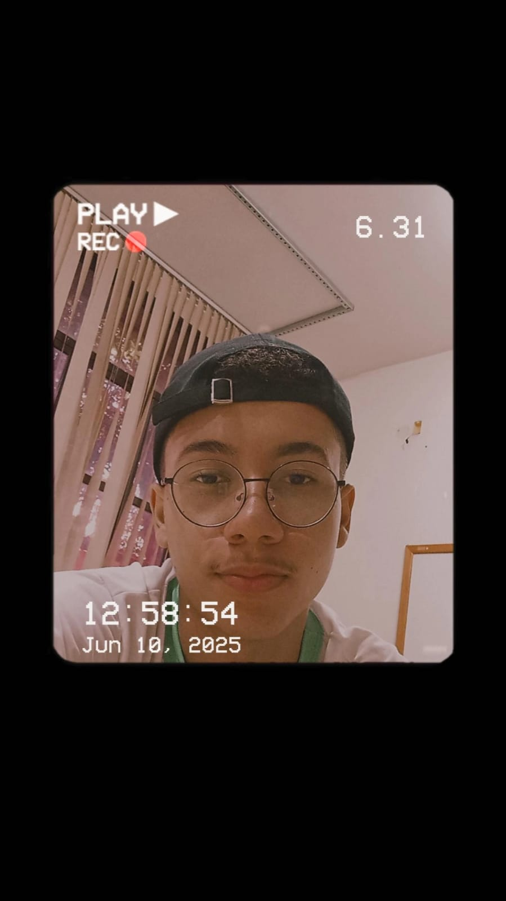
Kayllo Martins
Medicina
Olá! Me chamo Kayllo e tenho 17 anos
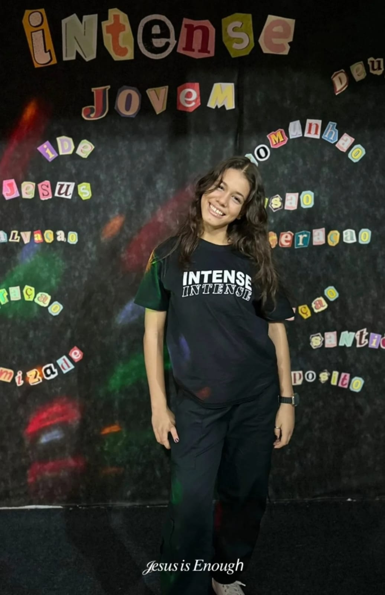
Lauanny Reis
Direito ou Psicologia
Lauanny Reis, 17 anos
gosto de ler e escrever

Lucas Gabriel Borges
Riqueza
Lucas é um excelente aluno,
sempre comprometido com seus estudos e buscando aprender cada vez mais.
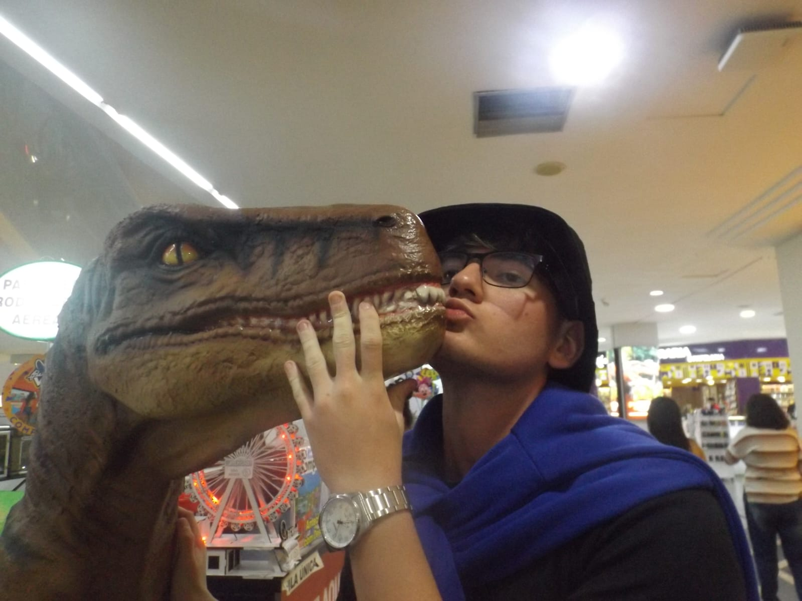
Lucas Menezes D'Alessandro
Empreendedorismo
Lulu boy, o bom
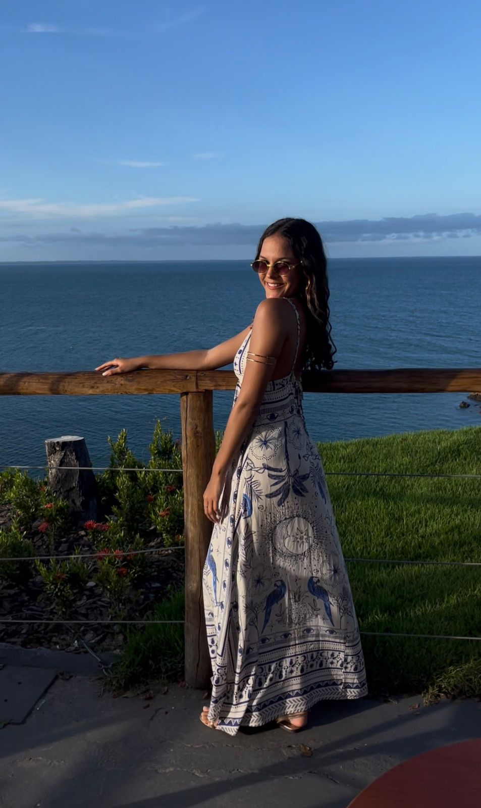
Manuella Rodrigues
Riqueza
Com 17 anos, apaixonada por jogar vôlei, fascinada por aprender novas línguas
e cheia de vontade de conhecer o mundo.
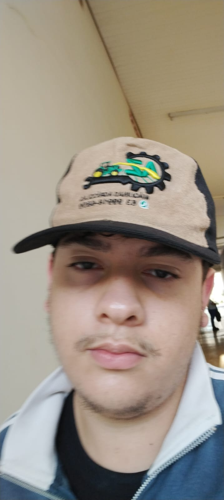
Matheus Campelo
Presidente do Brasil
Matheus
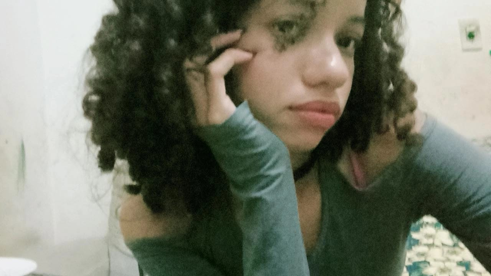
Nadielly da Silva Cruz
Toxicologia
Oii, meu nome é Nadielly, sou de fevereiro de 2007 e sou uma das mais velhas da sala.
Minha cor favorita é roxo e minha banda favorita é The Neighbourhood.
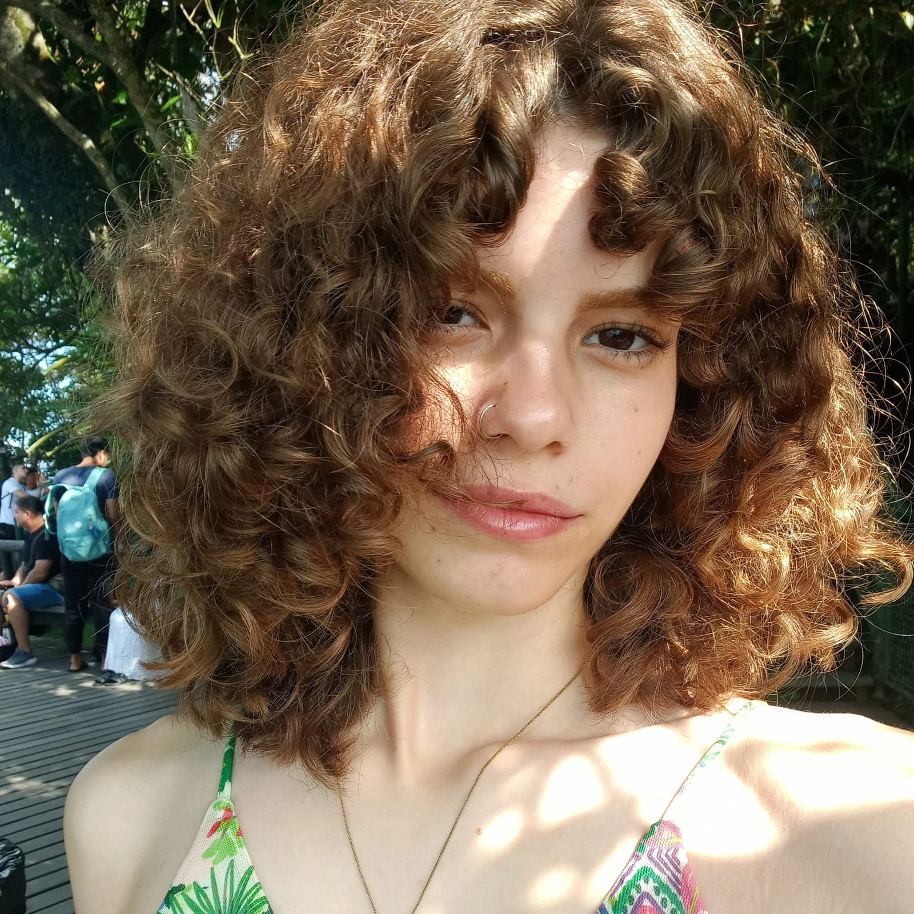
Natália Lambert Nivaldo
Programação
Aqui é a Natália Lambert!
Sou de 2008, de touro e uma amante obras de terror.
Me siga no @lambertnati no instagram.
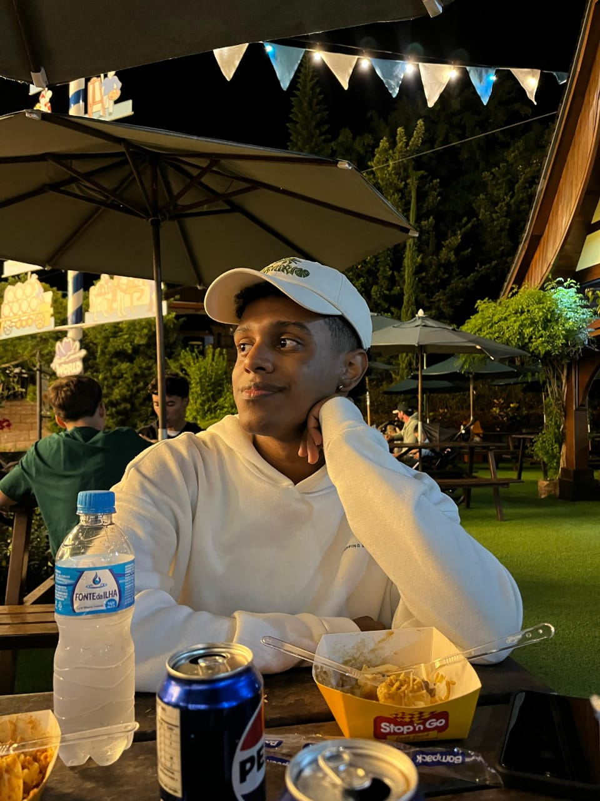
Nathan Oliveira
Medicina e Música
Nathan, eu amo cantar e eu acho que eu sou legal né 💅🏾
eu quero ser um médico cantor
(qualquer coisa a gente vende arte na praia também 🗣️)
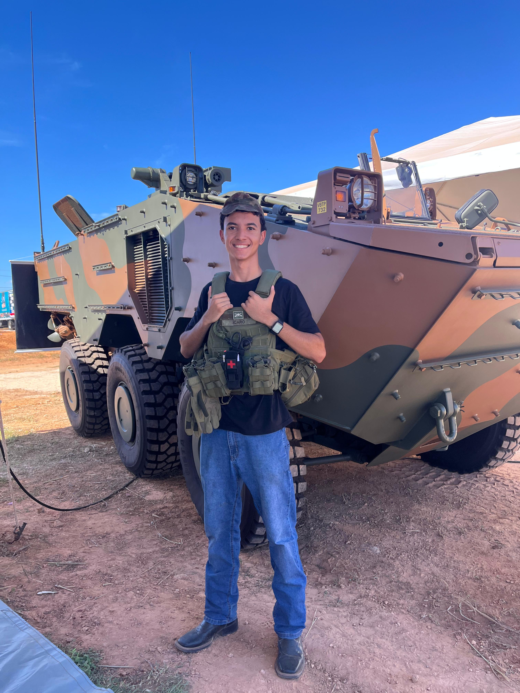
Rafael Rodrigues Gonçalves
Engenharia Agronômica
Fiel, inteligente, engraçado, carismático e jogador ⚽
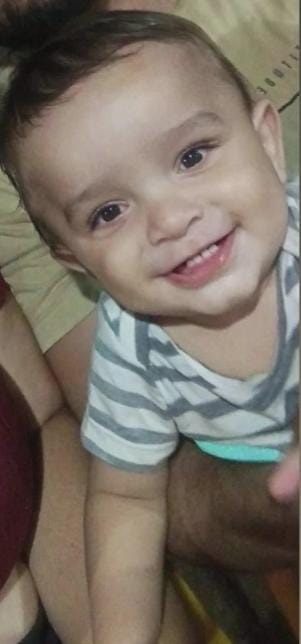
Ravi Soares Parente
Filho da Vivi
Ravi Soares Parente é filho da Vitória, tem 1 ano, é sorridente e brincalhão.
Adora pãozinho, especialmente os feitos pela mamãe,
e ainda não sabe o que quer fazer, mas tem muito tempo para pensar.
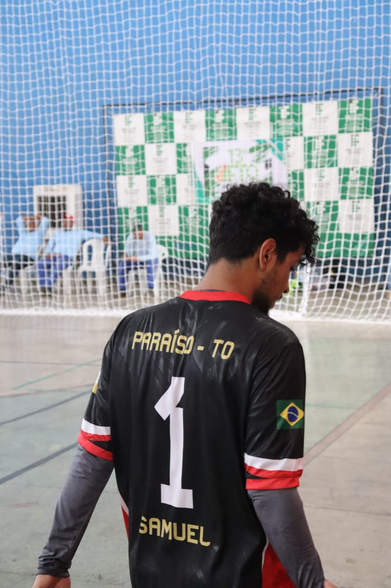
Samuel Barbosa
Desejo de uma profissão que durma sabendo ser a certa
Samuel = café
eu não espero um bom dia pela manhã
espero um "BORA TOMA CAFÉ" e isso resume tudo
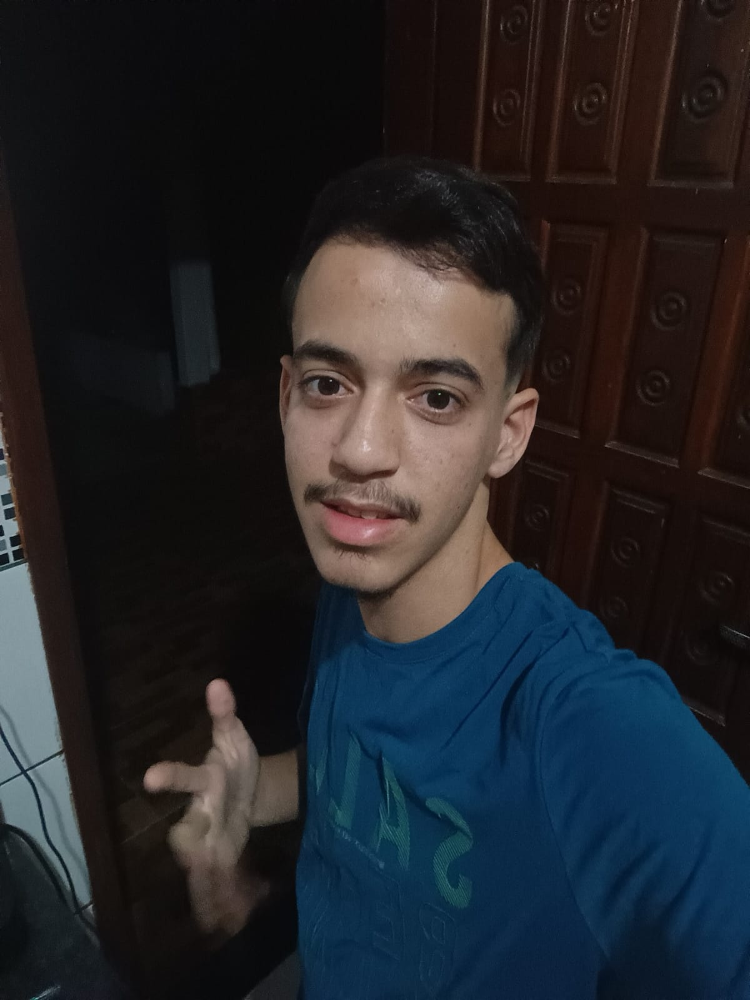
Thiago Silva
Análise de Dados
Sou Thiago, tenho 17 anos
e gosto de assistir séries, animes e Doramas, jogar bola e resenha
Vitória Andrade Soares
Empreendedorismo
Vitória nasceu em Paraíso do Tocantins e morou em uma fazenda em Divinópolis até os 16 anos.
Mudou-se para Santana, onde iniciou um curso técnico em informática no IFTO.
Em 2024, tornou-se mãe e decidiu deixar o IFTO para seguir seu sonho de viver na fazenda e continuar o negócio da família.